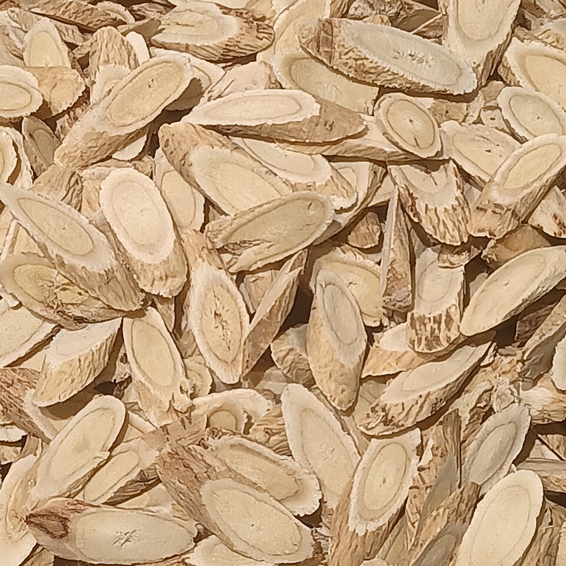

Huángqí · Astragalus root黄芪
Astragali Radix · Supplementing herbs: qi tonicsAstragali Radix · 补虚药·补气药




- Flavour · nature性味
- sweet; slightly warm甘，微温
- Channels归经
- Lung, Spleen肺、脾经
- Direction升降浮沉
- Sweet and slightly warm; lifts yang to raise sunken qi, secures the exterior and moves water; raw it leans toward securing the exterior, expelling pus and promoting urination, honey-fried it leans toward supplementing the middle and boosting qi甘温，善升阳举陷、走表固卫，又能行水；生用偏于固表、托毒、利水，蜜炙偏于补中益气
- Toxicity毒性
- Non-toxic无毒
- Dose (pharmacopoeia)用量（药典）
- 9–30 g (ceiling 30 g)（上限 30 克）
Decocted; honey-fried to supplement the middle and boost qi, raw to secure the exterior, promote urination and expel pus煎服；补中益气宜蜜炙用，固表、利水、托毒宜生用 - Pregnancy孕期
- Caution in pregnancy孕妇慎用 The pharmacopoeia and textbooks do not list Huang Qi as contraindicated in pregnancy, but Health Canada requires products containing astragalus to say not to use them during pregnancy or breastfeeding. Ask a health care practitioner or a licensed TCM practitioner before use in pregnancy or breastfeeding; do not self-medicate.药典与教材未列黄芪为孕期禁忌，但加拿大卫生部要求含黄芪产品标注「孕期或哺乳期勿用」。孕期、哺乳期请先问医务人员或持照中医师，不要自行服用。
- Health Canada加拿大卫生部
- Health Canada: monograph加拿大卫生部：有专论 The Health Canada NHPID monograph for Traditional Chinese Medicine Ingredients (TCMI), dated May 29, 2026, includes Astragalus membranaceus (Huang qi, Radix Astragali) in Table 1, general medicinal ingredients. It requires all products to state: do not use during pregnancy or breastfeeding; ask a health care practitioner before use if taking prescription drugs, if you have a serious condition or if you have an acute infection; stop use and consult a health care practitioner if symptoms persist or worsen. The risk statements of the single-ingredient Astragalus monograph must also be applied. The herb sits in Table 1 and is not among the restricted entries of Tables 3 and 4.加拿大卫生部天然保健品数据库的「传统中药成分（TCMI）」专论（2026 年 5 月 29 日）收录膜荚黄芪 Astragalus membranaceus（黄芪，Radix Astragali），列在表 1「一般药用成分」。该专论要求所有产品标注：孕期或哺乳期勿用；服用处方药、患严重疾病或急性感染者，用前先问医务人员；症状持续或加重即停用并就医。另须套用单味「黄芪（Astragalus）」专论的风险语。本味药收在表 1，不在表 3、表 4 的限制条目中。
- Conservation资源与保护
- Medicinal supply is mainly cultivated; the protection grade of wild Astragalus membranaceus and its Mongolian variety is to be verified; no CITES listing.药用黄芪以栽培为主；野生膜荚黄芪、蒙古黄芪的保护级别待核；无国际贸易公约（CITES）管制。
- Source来源
- Astragalus membranaceus (Fisch.) Bge. var. mongholicus (Bge.) Hsiao; Astragalus membranaceus (Fisch.) Bge.. Dried root of two Astragalus taxa, pea familyAstragalus membranaceus (Fisch.) Bge. var. mongholicus (Bge.) Hsiao（蒙古黄芪）；Astragalus membranaceus (Fisch.) Bge.（膜荚黄芪）。豆科植物的干燥根
Traditional actions and indications功效与主治（传统）
🏛 Traditional statements, not efficacy claims; the modern evidence is graded further down.以下为传统说法，不是疗效主张；现代证据见下文分级。
- Supplements qi and lifts yang补气升阳
- Secures the exterior and stops sweating固表止汗
- Promotes urination and reduces swelling利水消肿
- Generates fluids and nourishes blood生津养血
- Moves stagnation and frees painful obstruction行滞通痹
- Expels pus by supporting the body's own strength托毒排脓
- Closes sores and generates flesh敛疮生肌
Qi deficiency with fatigue, poor appetite and loose stools; sunken middle qi with prolonged diarrhoea, rectal prolapse, blood in the stool or uterine bleeding; spontaneous sweating from a weak exterior; oedema from qi deficiency; wasting-thirst with internal heat; sallow complexion from blood deficiency; hemiplegia, painful obstruction and numbness; abscesses slow to burst or sores slow to close. The pharmacopoeia lists honey-fried Huang Qi separately: it supplements qi and the middle, for qi-deficient fatigue, poor appetite and loose stools.气虚乏力、食少便溏；中气下陷、久泻脱肛、便血崩漏；表虚自汗；气虚水肿；内热消渴；血虚萎黄；半身不遂、痹痛麻木；痈疽难溃、久溃不敛。药典另列「炙黄芪」：益气补中，用于气虚乏力、食少便溏。
How to recognise it怎么认
Growing植株 A perennial herb about 50–100 cm tall, softly hairy; odd-pinnate leaves with many pairs of elliptic leaflets; pale yellow pea-type flowers in axillary racemes in summer; thin-walled, inflated, half-oval pods. The taproot is long, thick and cylindrical, running deep into the soil.多年生草本，高约 50–100 厘米，全株被柔毛；奇数羽状复叶，小叶多对，椭圆形；夏季开淡黄色蝶形花，排成腋生的总状花序；荚果膜质、膨胀，半卵圆形。主根粗长，圆柱形，向土中深扎。
Decoction pieces饮片 Round or oval thick slices; yellowish-white to pale brown-tan skin with lengthwise wrinkles or furrows; cut face with yellowish-white bark and pale yellow wood, radiating lines and clefts; in old roots the centre may be rotted, dark brown or hollow. Hard but tough, faint smell, slightly sweet with a beany taste on chewing. Honey-fried slices are deep yellow, slightly sticky, with a honey aroma and a sweet taste.类圆形或椭圆形厚片；外表皮黄白色至淡棕褐色，有纵皱纹或纵沟；切面皮部黄白色，木部淡黄色，有放射状纹理和裂隙，老根中心有时枯朽，呈黑褐色或空洞。质硬而韧，气微，味微甜，嚼之有豆腥味。蜜炙黄芪表面深黄色，略带黏性，有蜜香气，味甜。
Processing炮制
- Raw Huang Qi生黄芪：: Leans toward securing the exterior, promoting urination, expelling pus and closing sores偏于固表止汗、利水消肿、托毒排脓、敛疮生肌
- Honey-fried Huang Qi蜜炙黄芪：: Warmer; boosts qi and supplements the middle for fatigue, poor appetite and loose stools偏温，益气补中，用于气虚乏力、食少便溏
Cautions and incompatibilities使用注意与配伍禁忌
Not for excess patterns with a strong exterior pathogen, qi stagnation with dampness, food stagnation, early-stage abscesses or abscesses with heat-toxin still strong after bursting, nor for yin deficiency with yang hyperactivity (textbook position). Do not self-treat with qi tonics during a feverish cold or an acute infection. Health Canada requires products containing astragalus to carry these statements: do not use during pregnancy or breastfeeding; ask a health care practitioner first if taking prescription drugs, if you have a serious condition, or if you have an acute infection.表实邪盛、气滞湿阻、食积停滞、痈疽初起或溃后热毒尚盛等实证，以及阴虚阳亢者，不宜使用（教材口径）。感冒发热、急性感染期间不宜自行服用补气药。加拿大卫生部要求含黄芪的产品标注：孕期或哺乳期勿用；正在服用处方药、患严重疾病或急性感染者先问医务人员。
Interactions with medicines与西药的相互作用
The sources retrieved here contain no human evidence from which a specific drug interaction can be written. The two pharmacokinetic papers (pmid-39692050, pmid-41029673) address astragalus effects on drug-metabolising enzymes and transporters and in vitro incubation and pharmacokinetic assessment; they show that such questions are being studied but do not establish clinical interactions with any named drug. This does not prove that combining astragalus with prescription drugs is safe. Health Canada requires that people taking prescription drugs ask a health care practitioner before use.本次检索到的来源中，没有可据以写出具体西药相互作用的人体证据：两篇药代综述/研究（pmid-39692050、pmid-41029673）讨论的是黄芪对药物代谢酶与转运体的作用及体外孵育、药代评估，只能说明存在这方面的研究，不能推出具体药物的临床相互作用。这不等于已证明黄芪与西药合用安全。加拿大卫生部要求：正在服用处方药者，用前先问医务人员。
Modern research, graded现代研究（分级）
- E1 A meta-analysis suggests that the role of astragalus in diabetic nephropathy deserves attention, although its bioactive ingredients and mechanism of renal protection remain unknown.一项荟萃分析提示，黄芪用于糖尿病肾病的作用值得重视，但其有效成分与肾保护机制尚不清楚。
- E1 A systematic review combining clinical and preclinical studies concluded that astragalus is a cardioprotection candidate for viral myocarditis; because it includes preclinical work, this is not confirmed clinical efficacy.一项合并临床与临床前研究的系统综述认为，黄芪是病毒性心肌炎的心脏保护候选药物；因含临床前研究，尚不能当作确证的临床疗效。
- E1 A systematic review of astragalus extract as a topical skincare ingredient (not the decocted slices) for pigmentation and anti-aging concluded that it offers promise as a botanical anti-aging agent.一项系统综述评估的是黄芪提取物（外用护肤成分，不是饮片煎剂）在色素与抗衰老护肤中的应用，认为它有作为植物性抗衰老成分的前景。
- E4 A review of astragalus in cancer research states that its use alongside chemotherapy or other therapies still needs more in vivo validation and further clinical investigation.关于黄芪抗肿瘤作用的综述指出，黄芪与化疗或其他疗法合并使用时的作用，仍需要更多体内验证和进一步的临床研究。
- E4 A review summarises, from a metabolic perspective, how astragalus regulates drug-metabolising enzymes and transporters; this is pharmacokinetic work and cannot be read directly as clinical interactions.一篇综述从代谢角度总结了黄芪对药物代谢酶和转运体的调节，属药代层面的研究，不能直接推到临床相互作用。
- E5 A review of the pharmacological effects of astragaloside IV concerns a single isolated compound, not the astragalus slices themselves.关于黄芪甲苷药理作用的综述研究的是单体成分，而不是黄芪饮片本身。
In the classics古籍原文
「黃芪味甘微溫。主治癰疽久敗瘡，排膿止痛，大風癩疾，五痔鼠瘺，補虛，小兒百病。」——神农本草经
Shennong Bencao Jing (Divine Farmer's Materia Medica)
The Shennong Bencao Jing says Huang Qi treats long-standing, ulcerated abscesses, expels pus, relieves pain and 'supplements deficiency'. Later physicians made it a leading qi tonic and used it to expel pus and close sores; the original says only 'supplements deficiency' and 'expels pus, relieves pain', and the rest is later development.《神农本草经》说黄芪主治痈疽久败疮、能排脓止痛，又能「补虚」。后世把黄芪用作补气要药、托毒排脓、敛疮生肌；原文只写到「补虚」与排脓止痛，其余是后世的发展。
Where it is used: the web串联：它在哪些方里、连到哪里
Classical formulas (Shanghan, Jingui)经方（伤寒、金匮）
| Formula方 | Role角色 | Dose: original / today剂量：原书／今用 | Partners in the formula同方配伍 |
|---|---|---|---|
| Stephania and Astragalus Decoction防己黄芪汤 | Monarch君 | original text: see the Chinese original一两一分（去芦） | Fang Ji (Stephania root; never the aristolochia species)防己 · Bai Zhu (white atractylodes)白术 · Gāncǎo (Licorice root)甘草 |
| Astragalus and Cinnamon Twig Five-Substance Decoction黄芪桂枝五物汤 | Monarch君 | original text: see the Chinese original三两 | Guìzhī (Cassia twig)桂枝 · Báisháo (White peony root)白芍 · Sheng Jiang (fresh ginger)生姜 · Da Zao (jujube)大枣 |
| Astragalus Construct the Middle Decoction黄芪建中汤 | Monarch君 | original text: see the Chinese original一两半 | Jiao Yi (malt syrup)胶饴 · Guìzhī (Cassia twig)桂枝 · Báisháo (White peony root)白芍 · Sheng Jiang (fresh ginger)生姜 · Da Zao (jujube)大枣 · Gāncǎo (Licorice root)甘草 |
Later formulas (Song to Qing)时方（宋元明清）
Folk and single-herb remedies偏方、验方、单方
| Formula方 | Use用法 | Self-use能否自用 |
|---|---|---|
| Astragalus and lard ointment (toe nail ulceration)黄耆猪脂膏（甲疽疮脓） | External use外用 | Literature record only: not advised for self-use仅作文献记录，不建议自行使用 |
Patterns reached through these formulas经由这些方连到的证
- Spleen deficiency with sinking qi脾虚气陷 ← Tonify the Middle and Augment the Qi Decoction补中益气汤Qigong功法 Baduanjin (Eight Pieces of Brocade)八段锦 · Yijinjing (Sinew-changing exercises)易筋经
- Heart-spleen deficiency心脾两虚 ← Restore the Spleen Decoction归脾汤Self-massage自我按摩 Ten minutes before bed: a self-massage routine for restless nights睡前十分钟：给睡不着的夜晚一套按摩Qigong功法 Liuzijue (Six Healing Sounds)六字诀
- Spleen-stomach vacuity cold脾胃虚寒（中焦虚寒） ← Astragalus Construct the Middle Decoction黄芪建中汤
- Dual deficiency of qi and blood气血两虚 ← Astragalus Construct the Middle Decoction黄芪建中汤, Ginseng Nourishing-Nutritive Decoction人参养荣汤, All-Inclusive Great Tonifying Decoction十全大补汤
- Defensive-qi deficiency with unsecured exterior表虚不固（卫气虚） ← Jade Windscreen Powder玉屏风散Qigong功法 Tai chi (simplified 24-form)太极拳（简化二十四式）
Exam notes (HER)考点（HER）
HER essentials: (1) the action cluster: supplements qi and lifts yang, secures the exterior and stops sweating, promotes urination and reduces swelling, expels pus, closes sores and generates flesh; (2) raw versus honey-fried (raw to secure the exterior, promote urination and expel pus; honey-fried to supplement the middle and boost qi); (3) contrast with Ren Shen and Bai Zhu: Huang Qi excels at lifting yang, securing the exterior and moving water, while Ren Shen strongly supplements source qi; (4) classic pairings: Yu Ping Feng San (with Bai Zhu and Fang Feng), Bu Zhong Yi Qi Tang (Huang Qi as the monarch), Dang Gui Bu Xue Tang (Huang Qi to Dang Gui at 5:1, to boost qi and generate blood); (5) not for excess patterns with a strong exterior pathogen, qi stagnation with dampness, food stagnation or yin deficiency with yang hyperactivity.HER 必考：①补气升阳、固表止汗、利水消肿、托毒排脓、敛疮生肌的功效群；②生用与蜜炙之别（生用固表、利水、托毒，蜜炙补中益气）；③与人参、白术的对比：黄芪善升阳固表、利水，人参大补元气；④经典配伍：玉屏风散（黄芪配白术、防风）、补中益气汤（黄芪为君）、当归补血汤（黄芪与当归 5:1，补气生血）；⑤表实邪盛、气滞湿阻、食积停滞、阴虚阳亢者不宜。
Sources依据
- Chinese Pharmacopoeia Commission. Pharmacopoeia of the People's Republic of China, 2020 edition, vol. I国家药典委员会《中华人民共和国药典》2020 年版一部
- Zhong Gansheng (ed.). Chinese Materia Medica (national TCM higher-education textbook series)钟赣生主编《中药学》（全国中医药行业高等教育规划教材）
- NCCIH. Astragalus ↗
- NCCIH. Herb-Drug Interactions: What the Science Says ↗
- Health Canada, NHPID monograph: Traditional Chinese Medicine Ingredients (TCMI), May 29, 2026 ↗
- Health Canada, NHPID monograph: Astragalus (May 30, 2025) ↗
- Li et al. Meta-analysis of the clinical value of Astragalus membranaceus in diabetic nephropathy. J Ethnopharmacol. 2011 ↗
- Zheng et al. Clinical and Preclinical Systematic Review of Astragalus Membranaceus for Viral Myocarditis. Oxid Med Cell Longev. 2020 ↗
- Jackson et al. Astragalus membranaceus Extract as a Botanical Ingredient for Pigmentary and Anti-Aging Skincare: A Systematic Review. J Drugs Dermatol. 2026 ↗
- Li et al. Anti-tumor effects and mechanisms of Astragalus membranaceus (AM) and its specific immunopotentiation: Status and prospect. J Ethnopharmacol. 2020 ↗
- Wang et al. Herb-drug interaction potential of Astragali Radix: a metabolic perspective. Drug Metab Rev. 2025 ↗
- Wang et al. Herb-drug interaction of Astragali Radix based on in vitro incubation and pharmacokinetic assessment. BMC Complement Med Ther. 2025 ↗
- Zhang et al. Astragaloside IV derived from Astragalus membranaceus: A research review on the pharmacological effects. Adv Pharmacol. 2020 ↗